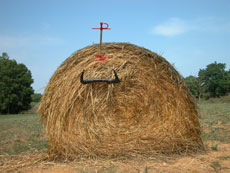

|
EL BRAU BLAU
THE BLUE BULL
Daniel V. Villamediana | Spanien 2008 | 63 Min.
Material : DV
Format: DVD
Original language: no dialogues
script: Daniel V. Villamediana
Camera: Pablo Morales Canedo
Sound: Lluis Galter
Sound Design : Alejandro Catillo
Editing: Daniel V. Villamediana, Pablo Morales Canedo
With Víctor J. Vázquez
Production: Eddie Saeta, El Toro Azul Porducciones
Print / Sales : Eddie Saeta
The world of bullfight is the locus of a complex and particular ritual, but what EL BRAU BLAU does is create its own ritual, outside the stereotypical themes and images. From this perspective, it is a work of eccentric character, in which solitude is transformed into a source of creation. A solitude which takes us back to the childhood of each one of us, where we construct an imaginary world out of the elements offered us by nature. But the film also has something primitive. Everything in it is closely linked to the elements: rock, earth, air and steel. It is a film firmly tied to the physical, the organic, the body of the protagonist; and yet at the same time, increasingly tending as it progresses towards the unreal and the imaginative. – Daniel V. Villamediana
Daniel V. Villamediana, born in 1975 in Valladolid, Spain. He studied History and Art History at the Valladolid University and finished his first short feature Espacio público in 2006 when he also wrote the script for José Maria de Orbes La línea recta. He is a critic for the film magazine "Letras de Cine" and teaches film theory, script writing and the technique of dcumentary movie making at the Observatorio de Cine in Barcelona. El brau blau is his first feature length film.
back
|